산업안전지도사 (2017-03-25 기출문제)
1과목: 산업안전보건법령
1. 산업안전보건법령상 용어에 관한 설명으로 옳지 않은 것은?
- "산업재해"란 근로자가 업무에 관계되는 건설물ㆍ설비ㆍ원재료ㆍ가스ㆍ증기ㆍ분진 등에 의하거나 작업 또는 그 밖의 업무로 인하여 사망 또는 부상하거나 질병에 걸리는 것을 말한다.
- "근로자"란 직업의 종류와 관계없이 임금을 목적으로 사업이나 사업장에 근로를 제공하는 자를 말한다.
- "사업주"란 근로자를 사용하여 사업을 하는 자를 말한다.
- "작업환경측정"이란 작업환경 실태를 파악하기 위하여 해당 근로자 또는 작업장에 대하여 사업주가 측정계획을 수립한 후 시료(試料)를 채취하고 분석ㆍ평가하는 것을 말한다.
- "중대재해"란 산업재해 중 재해정도가 심한 것으로서 직업성질병자가 동시에 5명 이상 발생한 재해를 말한다.
(정답률: 94%)

2. 산업안전보건법령상 산업재해 발생 기록 및 보고 등에 관한 설명으로 옳은 것은?
- 사업주는 중대재해가 발생한 사실을 알게 된 경우에는 지체 없이 발생 개요 및 피해 상황 등을 관할 지방고용노동관서의 장에게 전화ㆍ팩스 또는 그 밖에 적절한 방법으로 보고하여야 한다.
- 사업주는 4일 이상의 요양을 요하는 부상자가 발생한 산업재해에 대하여는 그 발생 개요ㆍ원인 및 신고 시기, 재발방지 계획 등을 고용노동부장관에게 신고하여야 한다.
- 건설업의 경우 사업주는 산업재해조사표에 근로자대표의 동의를 받아야 하며, 그 기재 내용에 대하여 근로자대표의 이견이 있는 경우에는 그 내용을 첨부하여야 한다.
- 사업주는 산업재해로 3일 이상의 휴업이 필요한 부상자가 발생한 경우에는 해당 산업재해가 발생한 날부터 3개월 이내에 산업재해조사표를 작성하여 관할 지방고용노동관서의 장에게 제출하여야 한다.
- 사업주는 산업재해 발생기록에 관한 서류를 2년간 보존하여야 한다.
(정답률: 92%)
3. 산업안전보건법령상 법령 요지의 게시 및 안전ㆍ보건표지의 부착 등에 관한설명으로 옳지 않은 것은?
- 사업주는 이 법에 따른 명령의 요지를 상시 각 작업장 내에 근로자가 쉽게 볼 수 있는 장소에 게시하거나 갖추어 두어 근로자로 하여금 알게 하여야 한다.
- 근로자대표는 안전ㆍ보건진단 결과를 통지할 것을 사업주에게 요청할 수 있고 사업주는 이에 성실히 응하여야 한다.
- 사업주는 사업장의 유해하거나 위험한 시설 및 장소에 대한 경고를 위하여 안전ㆍ보건표지를 설치하거나 부착하여야 한다.
- 안전ㆍ보건표지 속의 그림 또는 부호의 크기는 안전ㆍ보건표지의 크기와 비례하여야 하며, 안전ㆍ보건표지 전체 규격의 20퍼센트 이상이 되어야 한다.
- 안전ㆍ보건표지의 성질상 설치하거나 부착하는 것이 곤란한 경우에는 해당 물체에 직접 도장(塗裝)할 수 있다.
(정답률: 89%)
4. 산업안전보건법령상 안전보건관리책임자의 업무 내용에 해당하는 것을 모두 고른 것은?
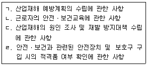
- ㄱ, ㄴ
- ㄷ, ㄹ
- ㄱ, ㄴ, ㄷ
- ㄴ, ㄷ, ㄹ
- ㄱ, ㄴ, ㄷ, ㄹ
(정답률: 81%)
5. 산업안전보건법령상 안전보건관리규정에 관한 설명으로 옳지 않은 것은?
- 안전보건관리규정은 해당 사업장에 적용되는 단체협약 및 취업규칙에 반할 수 없다.
- 상시 근로자 100명을 사용하는 정보서비스업 사업주는 안전보건관리규정을 작성하여야 한다.
- 안전보건관리규정에 관하여는 이 법에서 규정한 것을 제외하고는 그 성질에 반하지 아니하는 범위에서「근로기준법」의 취업규칙에 관한 규정을 준용한다.
- 안전보건관리규정을 작성할 경우에는 안전ㆍ보건교육에 관한 사항이 포함되어야 한다.
- 산업안전보건위원회가 설치되어 있지 아니한 사업장의 경우 사업주는 안전보건관리규정을 작성하거나 변경할 때에는 근로자대표의 동의를 받아야 한다.
(정답률: 96%)
6. 산업안전보건법령상 유해하거나 위험한 작업의 도급에 관한 설명으로 옳지 않은 것은?(오류 신고가 접수된 문제입니다. 반드시 정답과 해설을 확인하시기 바랍니다.)
- 도금작업의 도급을 받으려는 자는 고용노동부장관의 인가를 받아야 한다.
- 지방고용노동관서의 장은 도급인가 신청서가 접수된 때에는 접수된 날부터 10일 이내에 신청서를 반려하거나 인가증을 신청자에게 발급하여야 한다.
- 수은, 납, 카드뮴 등 중금속을 제련, 주입, 가공 및 가열하는 작업은 도급인가의 대상이다.
- 지방고용노동관서의 장은 도급인가 신청의 내용 및 한국산업안전보건공단의 확인 결과가 이 법령의 기준에 적합하지 아니하면 이를 인가하여서는 아니 된다.
- 유해한 작업의 도급에 대한 인가를 받으려는 자는 도급인가 신청서를 제출할 때 도급대상 작업의 공정도와 도급계획서를 첨부하여야 한다.
(정답률: 59%)
7. 산업안전보건법령상 안전관리전문기관의 지정의 취소 등에 관한 규정의 일부이다. ( )안에 들어갈 숫자의 연결이 옳은 것은?
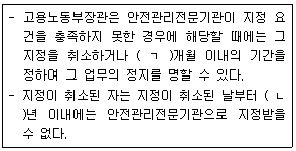
- ㄱ: 1, ㄴ: 1
- ㄱ: 3, ㄴ: 1
- ㄱ: 3, ㄴ: 2
- ㄱ: 6, ㄴ: 1
- ㄱ: 6, ㄴ: 2
(정답률: 77%)
8. 산업안전보건법령상 안전ㆍ보건 관리체제에 관한 설명으로 옳지 않은 것은?
- 안전보건관리책임자는 안전관리자와 보건관리자를 지휘ㆍ감독한다.
- 안전보건관리책임자는 해당 사업에서 그 사업을 실질적으로 총괄관리하는 사람이어야 한다.
- 안전관리자는 산업재해에 관한 통계의 유지ㆍ관리ㆍ분석을 위한 보좌 및 조언ㆍ지도 등의 업무를 수행하여야 한다.
- 고용노동부장관은 안전관리전문기관의 업무정지를 명하여야 하는 경우에 그 업무정지가 공익을 해칠 우려가 있다고 인정하면 업무정지처분을 갈음하여 2억원 이하의 과징금을 부과할 수 있다.
- 상시 근로자수가 500명 이상인 식료품 제조업의 경우 안전관리자를 2명 이상 선임하여야 한다.
(정답률: 77%)
9. 산업안전보건법령상 도급사업 시 구성하는 안전ㆍ보건에 관한 협의체의 협의사항에 포함되지 않는 것은?
- 작업장 간의 연락 방법
- 재해발생 위험 시의 대피방법
- 작업장의 순회점검에 관한 사항
- 작업장에서의 위험성평가의 실시에 관한 사항
- 수급인 상호간의 작업공정의 조정
(정답률: 70%)
10. 산업안전보건법령상 안전인증에 관한 설명으로 옳은 것은?
- 연구ㆍ개발을 목적으로 안전인증대상 기계ㆍ기구등을 제조하는 경우에도 안전인증을 받아야 한다.
- 고용노동부장관은 안전인증을 받은 자가 안전인증기준을 지키고 있는지를 5년을 주기로 확인하여야 한다.
- 곤돌라를 설치ㆍ이전하는 경우뿐만 아니라 그 주요 구조 부분을 변경하는 경우에도 안전인증을 받아야 한다.
- 서면심사와 기술능력 및 생산체계 심사 결과가 안전인증기준에 적합할 경우에 유해ㆍ위험한 기계ㆍ기구ㆍ설비등의 표본을 추출하여 하는 심사를 개별 제품심사라고 한다.
- 예비심사의 경우 안전인증 신청서를 제출받은 안전인증기관은 7일 이내에 심사하여야 하며 부득이한 사유가 있을 때에는 15일의 범위에서 심사기간을 연장할 수 있다.
(정답률: 87%)
11. 산업안전보건법령상 도급인인 사업주가 작업장의 안전ㆍ보건조치 등을 위하여 2일에 1회 이상 순회점검하여야 하는 사업을 모두 고른 것은?
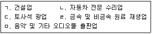
- ㄱ, ㄴ, ㅁ
- ㄱ, ㄷ, ㄹ
- ㄴ, ㄷ, ㅁ
- ㄱ, ㄴ, ㄷ, ㄹ
- ㄱ, ㄷ, ㄹ, ㅁ
(정답률: 84%)
12. 산업안전보건기준에 관한 규칙상 니트로화합물을 제조하는 작업장의 비상구 설치에 관한 설명으로 옳지 않은 것은?
- 출입구 외에 안전한 장소로 대피할 수 있는 비상구 1개 이상을 설치할 것
- 비상구의 문은 피난 방향으로 열리도록 하고, 실내에서 항상 열 수 있는 구조로 할 것
- 비상구의 너비는 0.75미터 이상으로 하고, 높이는 1.5미터 이상으로 할 것
- 비상구는 출입구와 같은 방향에 있으며 출입구로부터 3미터 이상 떨어져 있을 것
- 작업장의 각 부분으로부터 하나의 비상구 또는 출입구까지의 수평거리가 50미터 이하가 되도록 할 것
(정답률: 70%)
13. 산업안전보건법령상 자율안전확인대상 기계ㆍ기구등에 해당하지 않는 것은?
- 휴대형 연삭기
- 혼합기
- 파쇄기
- 자동차정비용 리프트
- 기압조절실(chamber)
(정답률: 79%)
14. 산업안전보건법령상 안전검사 대상에 해당하는 것을 모두 고른 것은?
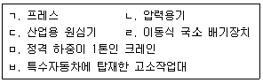
- ㄱ, ㄹ, ㅂ
- ㄴ, ㅁ, ㅂ
- ㄱ, ㄴ, ㄷ, ㅂ
- ㄴ, ㄷ, ㄹ, ㅁ
- ㄱ, ㄴ, ㄷ, ㄹ, ㅁ
(정답률: 67%)
15. 산업안전보건법령상 유해ㆍ위험 방지를 위하여 방호조치가 필요한 기계ㆍ기구 등과 이에 설치하여야 할 방호장치를 옳게 연결한 것은?
- 예초기 - 회전체 접촉 예방장치
- 진공포장기 - 압력방출장치
- 금속절단기 - 구동부 방호 연동장치
- 원심기 - 날접촉 예방장치
- 공기압축기- 압력방출장치
(정답률: 82%)
16. 산업안전보건법령상 3년 이하의 징역 또는 2천만원 이하의 벌금에 처하게 될수 있는 자는?
- 중대재해 발생현장을 훼손한 자
- 공정안전보고서의 내용이 중대산업사고를 예방하기 위하여 적합하다고 통보받기 전에 관련 설비를 가동한 자
- 동력으로 작동하는 기계ㆍ기구로서 작동부분의 돌기부분을 묻힘형으로 하지 않거나 덮개를 부착하지 않고 양도한 자
- 안전인증을 받지 않은 유해ㆍ위험한 기계ㆍ기구ㆍ설비등에 안전인증표시를 한 자
- 작업환경측정 결과에 따라 근로자의 건강을 보호하기 위하여 해당 시설ㆍ설비의 설치ㆍ개선 또는 건강진단의 실시 등의 조치를 하지 아니한 자
(정답률: 53%)
17. 산업안전보건기준에 관한 규칙상 통로를 설치하는 사업주가 준수하여야 하는 사항으로 옳지 않은 것은?
- 통로의 주요 부분에 통로표시를 하고, 근로자가 안전하게 통행할 수 있도록 하여야 한다.
- 통로면으로부터 높이 2미터 이내의 장애물을 제거하는 것이 곤란하다고 고용노동부장관이 인정하는 경우에는 근로자에게 발생할 수 있는 부상 등의 위험을 방지하기 위한 안전 조치를 하여야 한다.
- 가설통로를 설치하는 경우, 건설공사에 사용하는 높이 8미터 이상인 비계다리에는 7미터 이내마다 계단참을 설치하여야 한다.
- 잠함(潛函) 내 사다리식 통로를 설치하는 경우 그 폭은 30센티미터 이상으로 설치하여야 한다.
- 계단 및 계단참을 설치하는 경우 매제곱미터당 500킬로그램 이상의 하중에 견딜수 있는 강도를 가진 구조로 설치하여야 한다.
(정답률: 68%)
18. 산업안전보건법령상 화학물질의 유해성ㆍ위험성을 조사하고 그 조사보고서를 고용노동부장관에게 제출하여야 하는 것은?
- 방사성 물질
- 천연으로 산출된 화학물질
- 연간 수입량이 1,000킬로그램 미만인 경우로서 고용노동부장관의 확인을 받은 신규화학물질
- 전량 수출하기 위하여 연간 10톤 이하로 제조하거나 수입하는 경우로서 고용노동부장관의 확인을 받은 신규화학물질
- 일반 소비자의 생활용으로 직접 소비자에게 제공되고 국내의 사업장에서 사용되지 않는 경우로서 고용노동부장관의 확인을 받은 신규화학물질
(정답률: 67%)
19. 산업안전보건법령상 건강진단에 관한 설명으로 옳은 것은?
- 건강진단의 종류에는 일반건강진단, 특수건강진단, 채용시건강진단, 수시건강진단, 임시건강진단이 있다.
- 6개월간 밤 12시부터 오전 5시까지의 시간을 포함하여 계속되는 8시간 작업을 월 평균 4회 이상 수행하는 야간작업 근로자도 특수건강진단을 받아야 한다.
- 벤젠에 노출되는 업무에 종사하는 근로자는 배치 후 3개월 이내에 첫 번째 특수건강진단을 받고, 이후 6개월마다 주기적으로 특수건강진단을 받아야 한다.
- 다른 사업장에서 해당 유해인자에 대하여 배치전건강진단을 받고 9개월이 지난 근로자로서 건강진단결과를 적은 서류를 제출한 근로자는 배치전건강진단을 실시하지 아니할 수 있다.
- 특수건강진단대상업무로 인하여 해당 유해인자에 의한 건강장해를 의심하게 하는 증상을 보이는 근로자에 대하여 사업주가 실시하는 건강진단을 임시건강진단이라 한다.
(정답률: 50%)
20. 산업안전보건법령상 질병자의 근로 금지ㆍ제한에 관한 설명으로 옳지 않은 것은?
- 사업주는 심장 등의 질환이 있는 사람으로서 근로에 의하여 병세가 악화될 우려가 있는 사람에 대해서는 의사의 진단에 따라 근로를 금지하여야 한다.
- 사업주는 발암성물질을 취급하는 작업에 종사하는 근로자에게는 1일 6시간, 1주 34시간을 초과하여 근로하게 하여서는 아니 된다.
- 사업주는 착암기 등에 의하여 신체에 강렬한 진동을 주는 작업에서 유해ㆍ위험 예방조치 외에 작업과 휴식의 적정한 배분 등 근로자의 건강 보호를 위한 조치를 하여야 한다.
- 사업주는 심장판막증이 있는 근로자를 고기압 업무에 종사하도록 하여서는 아니된다.
- 사업주는 근로가 금지되거나 제한된 근로자가 건강을 회복하였을 때에는 지체없이 취업하게 하여야 한다.
(정답률: 60%)
21. 산업안전보건법령상 유해ㆍ위험방지계획서의 제출 대상 업종에 해당하지 않는 것은? (단, 전기 계약용량이 300킬로와트 이상인 사업에 한함)
- 전기장비 제조업
- 식료품 제조업
- 가구 제조업
- 목재 및 나무제품 제조업
- 전자부품 제조업
(정답률: 75%)
22. 산업안전보건법령상 지도사에 관한 설명으로 옳은 것은?
- 지도사 시험에 합격하여 고용노동부장관에게 등록하여야만 지도사의 자격을 가진다.
- 이 법을 위반하여 벌금형을 선고받고 6개월이 된 자는 지도사의 등록을 할 수있다.
- 지도사는 3년마다 갱신등록을 하여야 하며, 갱신등록은 지도실적이 없어도 가능하다.
- 지도사 등록의 갱신기간 동안 지도실적이 2년 이상인 지도사의 보수교육시간은 10시간 이상으로 한다.
- 산업안전 및 산업보건분야에서 3년간 실무에 종사한 지도사가 직무를 개시하려는 경우에는 등록을 하기 전 연수교육이 면제된다.
(정답률: 50%)
23. 산업안전보건법령상 서류의 보존기간에 관한 설명으로 옳지 않은 것은?
- 기관석면조사를 한 건축물이나 설비의 소유주 등과 석면조사기관은 그 결과에 관한 서류를 5년간 보존하여야 한다.
- 지정측정기관은 작업환경측정에 관한 사항으로서 측정대상 사업장의 명칭 및 소재지 등을 기재한 서류를 3년간 보존하여야 한다.
- 사업주는 노사협의체 회의록을 2년간 보존하여야 한다.
- 자율안전확인대상 기계ㆍ기구 등을 제조하거나 수입하려는 자는 자율안전기준에 맞는 것임을 증명하는 서류를 2년간 보존하여야 한다.
- 사업주는 화학물질의 유해성ㆍ위험성 조사에 관한 서류를 3년간 보존하여야 한다.
(정답률: 70%)
24. 산업안전보건기준에 관한 규칙상 근골격계부담작업으로 인한 건강장해 예방에 관한 설명으로 옳지 않은 것은?
- 신설되는 사업장의 사업주는 근로자가 근골격계부담작업을 하는 경우에 신설일부터 1년 이내에 최초의 유해요인조사를 하여야 한다.
- 유해요인조사에는 작업장 상황, 작업조건, 작업과 관련된 근골격계질환 징후와 증상 유무 등이 포함된다.
- 유해요인조사는 근로자와의 면담, 증상 설문조사, 인간공학적 측면을 고려한 조사 등 적절한 방법으로 하여야 한다.
- 근로자는 근골격계부담작업으로 인하여 운동범위의 축소 등의 징후가 나타나는 경우 그 사실을 사업주에게 통지할 수 있다.
- 연간 7명이 근골격계질환으로 인한 업무상질병으로 인정받은 상시 근로자수 85명을 고용하고 있는 사업주는 근골격계질환 예방관리 프로그램을 시행하여야 한다.
(정답률: 63%)
25. 산업안전보건법령상 건강관리수첩 발급대상 업무 및 대상요건에 해당하지 않는 것은?
- 니켈 또는 그 화합물을 광석으로부터 추출하여 제조하거나 취급하는 업무에 5년 이상 종사한 사람
- 염화비닐을 제조하거나 사용하는 석유화학설비를 유지ㆍ보수하는 업무에 4년 이상 종사한 사람
- 비파괴검사 업무에 3년 이상 종사한 사람
- 석면 또는 석면방직제품을 제조하는 업무에 3개월 이상 종사한 사람
- 비스-(클로로메틸)에테르를 제조하거나 취급하는 업무에 3년 이상 종사한 사람
(정답률: 75%)
2과목: 산업안전일반
26. 제조물책임법상 용어의 정의로 옳지 않은 것은?
- 제조물이란 제조되거나 가공된 동산(다른 동산이나 부동산의 일부를 구성하는 경우를 포함한다)을 말한다.
- 제조업자란 제조물의 제조ㆍ가공 또는 수입을 업으로 하는 자를 말한다.
- 제조물의 결함에는 제조상의 결함, 설계상의 결함, 유통상의 결함이 있다.
- 설계상의 결함이란 제조업자가 합리적인 대체설계를 채용하였더라면 피해나 위험을 줄이거나 피할 수 있었음에도 대체설계를 채용하지 아니하여 해당 제조물이 안전하지 못하게 된 경우를 말한다.
- 통상적으로 기대할 수 있는 안전성이 결여되어 있는 것도 결함이라 할 수 있다.
(정답률: 50%)
27. 파블로프(Pavlov) 조건반사설의 학습원리에 해당하지 않는 것은?
- 강도의 원리: 자극이 강할수록 학습이 보다 더 잘된다.
- 시간의 원리: 조건자극을 무조건자극보다 조금 앞서거나 동시에 주어야 강화가 잘된다.
- 계속성의 원리: 자극과 반응의 관계는 횟수가 거듭될수록 강화가 잘된다.
- 일관성의 원리: 일관된 자극을 사용하여야 한다.
- 불확실성의 원리: 학습의 목표가 반드시 달성된다고 확신 할 수 없다.
(정답률: 79%)
28. 관리감독자를 대상으로 하는 TWI(Training Within Industry)의 교육훈련내용이 아닌 것은?
- 작업준비훈련(JPT)
- 작업지도훈련(JIT)
- 작업방법훈련(JMT)
- 인간관계훈련(JRT)
- 작업안전훈련(JST)
(정답률: 75%)
29. 산업안전보건법령상 고용노동부장관이 필요하다고 인정할 때에 해당 사업주에게 안전ㆍ보건진단을 받아 안전보건개선계획을 수립ㆍ제출할 것을 명할 수 있는 사업장이 아닌 것은?
- 사업주가 안전ㆍ보건조치의무를 이행하였으나, 2개월의 요양이 필요한 부상자가 동시에 8명이 발생한 재해발생사업장
- 산업재해율이 같은 업종 평균 산업재해율의 2.5배인 사업장
- 상시 근로자가 1,000명이고 직업병에 걸린 사람이 연간 3명이 발생한 사업장
- 상시 근로자가 1,500명이고 직업병에 걸린 사람이 연간 4명이 발생한 사업장
- 작업환경 불량, 화재ㆍ폭발 또는 누출사고 등으로 사회적 물의를 일으킨 사업장
(정답률: 61%)
30. 산업안전보건법령상 사업주가 해당 사업장의 근로자에 대하여 정기적으로 하여야 하는 안전ㆍ보건에 관한 교육내용이 아닌 것은?
- 산업재해보상보험 제도에 관한 사항
- 유해ㆍ위험 작업환경 관리에 관한 사항
- 사고 발생 시 긴급조치에 관한 사항
- 건강증진 및 질병 예방에 관한 사항
- 산업보건 및 직업병 예방에 관한 사항
(정답률: 50%)
31. 산업안전보건법령상 산업안전보건위원회를 설치ㆍ운영해야 할 사업의 종류 및 규모가 아닌 것은?
- 어업- 상시 근로자 400명
- 토사석 광업 -상시 근로자 200명
- 1차 금속 제조업 -상시 근로자 400명
- 금융 및 보험업- 상시 근로자 200명
- 비금속 광물제품 제조업- 상시 근로자 400명
(정답률: 66%)
32. 교육지도의 원칙에 관한 내용으로 옳지 않은 것은?
- 교육내용을 충분히 이해할 수 있도록 상대방의 입장을 고려하여 교육한다.
- 학습의욕을 고취하기 위하여 어려운 내용에서부터 쉬운 내용의 순서로 교육한다.
- 교육의 성과는 양보다 질을 중시한다는 점에서 순서에 따라 한 번에 한 가지씩 교육한다.
- 지식, 기술, 기능 및 태도가 몸에 익혀지도록 반복교육을 실시한다.
- 인간의 5가지 감각기관을 복합적으로 활용하여 교육한다.
(정답률: 78%)
33. 학습지도원리의 내용에 해당하지 않는 것은?
- 자발성의 원리: 학습자 스스로 학습에 참여해야 한다는 원리
- 집단화의 원리: 학습자의 공통된 요구 및 능력 위주로 지도해야 한다는 원리
- 사회화의 원리: 공동학습을 통해서 협력적이고 우호적인 학습을 진행한다는 원리
- 통합의 원리: 학습을 통합적인 전체로서 지도해야 한다는 원리
- 직관의 원리: 구체적인 사물을 직접 제시하거나 경험시킴으로써 큰 효과를 거둘 수 있다는 원리
(정답률: 52%)
34. 입식 작업대에 관한 설명으로 옳지 않은 것은?
- 작업대의 높이가 팔꿈치의 높이보다 낮은 것이 중(重)작업에 적합하다.
- 작업대의 높이가 팔꿈치의 높이보다 약간 높은 것이 정밀작업에 적합하다.
- 일반적으로 고정높이 작업면은 가장 키가 작은 사용자에게 맞추어 설계한다.
- 중량물을 다루는 경우에는 입식 작업대가 적합하다.
- 포장작업에서와 같이 아랫방향으로 힘을 발휘해야 하는 경우에는 입식 작업대가 적합하다.
(정답률: 73%)
35. 공기 중 연소범위가 가장 넓은 것은?
- 암모니아
- 메탄
- 프로판
- 에탄
- 아세틸렌
(정답률: 64%)
36. 시각적 표시장치에 관한 설명으로 옳은 것을 모두 고른 것은?
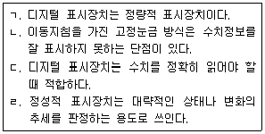
- ㄱ, ㄹ
- ㄴ, ㄷ
- ㄴ, ㄹ
- ㄱ, ㄴ, ㄷ
- ㄱ, ㄷ, ㄹ
(정답률: 62%)
37. 23 kg의 부재를 제자리에서 들어 올리는 들기작업을 수행할 때 시작점에서 NIOSH의 들기작업공식에 의한 들기지수(LI)는?
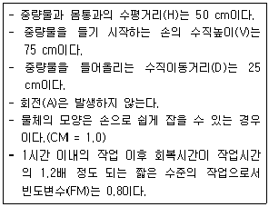
- 1.25
- 1.50
- 2.00
- 2.50
- 3.00
(정답률: 37%)
38. 산업안전보건법령상 안전인증 대상 기계ㆍ기구 등에 해당하지 않는 것은?
- 산업용 로봇
- 프레스
- 크레인
- 압력용기
- 곤돌라
(정답률: 69%)
39. 하인리히(Heinrich)가 주장한 재해발생과 재해예방에 관한 이론으로 옳은 것을 모두 고른 것은?
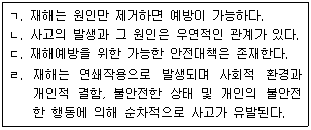
- ㄱ, ㄴ
- ㄴ, ㄷ
- ㄷ, ㄹ
- ㄱ, ㄴ, ㄹ
- ㄱ, ㄷ, ㄹ
(정답률: 77%)
40. 극한강도가 60 MPa, 허용응력이 40 MPa일 경우 안전계수(S)는?
- 0.7
- 1.0
- 1.5
- 2.4
- 2,400
(정답률: 62%)
41. 2,000명이 근무하는 기업의 작년 1년간 산업재해자가 48명 발생하여 근로손실일수가 2,400일이었다면 이 회사에 근무하는 근로자가 입사하여 정년까지 평균적으로 경험하는 재해의 건수와 근로손실일수는? (단, 근로자 1인당 연간총근로시간은 2,400시간, 근로자 1인이 입사하여 정년까지 근무하는 총근로시간은 100,000 시간으로 가정한다.)
- 재해건수: 1건, 근로손실일수: 50일
- 재해건수: 0.5건, 근로손실일수: 100일
- 재해건수: 2건, 근로손실일수: 200일
- 재해건수: 1.5건, 근로손실일수: 150일
- 재해건수: 2.5건, 근로손실일수: 200일
(정답률: 50%)
42. 시스템의 구성요소들이 동시에 가동되고 있고, 어느 하나만이라도 작동하면 그 시스템이 가동되는 구조는?
- 직렬구조
- 병렬구조
- 대기결함구조
- n중 k구조
- R구조
(정답률: 73%)
43. 기계나 설비를 작업공간에 배치하는 경우에 작업 성능을 향상시키기 위한 배치원칙이 아닌 것은?
- 중요성의 원칙
- 기능성의 원칙
- 사용심리의 원칙
- 사용빈도의 원칙
- 사용순서의 원칙
(정답률: 70%)
44. 산업안전보건기준에 관한 규칙상 소음 및 진동에 의한 건강장해의 예방에 관한 설명으로 옳지 않은 것은?
- "소음작업"이란 1일 8시간 작업을 기준으로 85데시벨 이상의 소음이 발생하는 작업을 말한다.
- 1⑤데시벨 이상의 소음이 1일 1시간 이상 발생하는 작업은 강렬한 소음작업이다.
- "청력보존 프로그램"이란 소음노출 평가, 소음노출 기준 초과에 따른 공학적 대책, 청력보호구의 지급과 착용, 소음의 유해성과 예방에 관한 교육, 정기적 청력 검사, 기록ㆍ관리 사항 등이 포함된 소음성 난청을 예방ㆍ관리하기 위한 종합적인 계획을 말한다.
- 체인톱, 동력을 이용한 연삭기를 사용하는 작업은 진동작업에 속한다.
- 1초 이상의 간격으로 130데시벨을 초과하는 소음이 1일 1백회 발생하는 작업은 충격소음작업이다.
(정답률: 56%)
45. 다음의 FT도에서 G1 의 발생확률은?
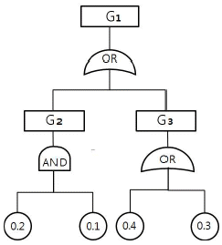
- 0.4884
- 0.5884
- 0.6884
- 0.7884
- 0.8884
(정답률: 39%)
46. 다음에서 설명하고 있는 것은?
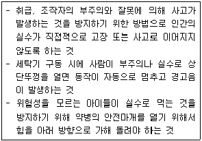
- fail safe
- fail soft
- fool proof
- failure rate
- back up
(정답률: 65%)
47. 가속수명 시험방법에서 스트레스 부과방법이 아닌 것은?
- 일정형 스트레스시험
- 점진형 스트레스시험
- 계단형 스트레스시험
- 간접형 스트레스시험
- 주기형 스트레스시험
(정답률: 60%)
48. 무재해운동의 3원칙 중 다음에 해당하는 것은?
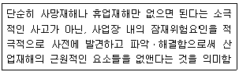
- 무의 원칙
- 보장의 원칙
- 참여의 원칙
- 조사의 원칙
- 안전제일의 원칙
(정답률: 72%)
49. FMEA에서 '실제의 손실'의 발생확률(β)을 나타내는 것은?
- β = 1.00
- 0.10 ≦β＜2.00
- 0.30＜β ≦0.50
- 0＜β＜0.20
- 0.20＜β＜0.30
(정답률: 72%)
50. 고용노동부에서 고시로 정한 사업장 위험성평가에 관한 지침에서 사용하는 용어에 관한 설명으로 옳지 않은 것은?
- “위험성평가”란 유해ㆍ위험요인을 파악하고 해당 유해ㆍ위험요인에 의한 부상 또는 질병의 발생 가능성(빈도)과 중대성(강도)을 추정ㆍ결정하고 감소대책을 수 립하여 실행하는 일련의 과정을 말한다.
- “유해ㆍ위험요인 파악”이란 유해요인과 위험요인을 찾아내는 과정을 말한다.
- “위험성”이란 유해ㆍ위험요인이 부상 또는 질병으로 이어질 수 있는 가능성(빈도)과 중대성(강도)을 조합한 것을 의미한다.
- “위험성 추정”이란 유해ㆍ위험요인별로 추정한 위험성의 크기가 허용 가능한 범위인지 여부를 판단하는 것을 말한다.
- “위험성 감소대책 수립 및 실행”이란 위험성 결정 결과 허용 불가능한 위험성을 합리적으로 실천 가능한 범위에서 가능한 한 낮은 수준으로 감소시키기 위한 대책을 수립하고 실행하는 것을 말한다.
(정답률: 74%)
3과목: 기업진단ㆍ지도
51. 파스칼(R. Pascale)과 애토스(A. Athos)의 7S 조직문화 구성요소 중 가장 핵심적인 요소는?
- 전략
- 공유가치
- 구성원
- 제도ㆍ절차
- 관리스타일
(정답률: 69%)
52. 상황적합적 조직구조이론에 관한 설명으로 옳지 않은 것은?
- 우드워드(J. Woodward)는 기술을 단위생산기술, 대량생산기술, 연속공정기술로 나누었는데, 대량생산에는 기계적 조직구조가 적합하고, 연속공정에는 유기적 조직구조가 적합하다고 주장하였다.
- 번즈(T. Burns)와 스탈커(G. Stalker)는 안정적인 환경에서는 기계적인 조직이, 불확실한 환경에서는 유기적인 조직이 효과적이라고 주장하였다.
- 톰슨(J. Thompson)은 기술을 단위작업 간의 상호의존성에 따라 중개형, 장치형, 집약형으로 유형화하고, 이에 적합한 조직구조와 조정형태를 제시하였다.
- 페로우(C. Perrow)는 기술을 다양성 차원과 분석가능성 차원을 기준으로 일상적 기술, 공학적 기술, 장인기술, 비일상적 기술로 유형화하였다.
- 블라우(P. Blau), 차일드(J. Child)는 환경의 불확실성을 상황변수로 연구하였다.
(정답률: 54%)
53. 인사고과에 관한 설명으로 옳은 것을 모두 고른 것은?
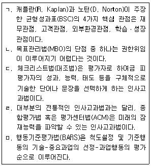
- ㄱ, ㅁ
- ㄷ, ㄹ
- ㄱ, ㄴ, ㄷ
- ㄷ, ㄹ, ㅁ
- ㄱ, ㄷ, ㄹ, ㅁ
(정답률: 28%)
54. 프로젝트 활동의 단축비용이 단축일수에 따라 비례적으로 증가한다고 할 때, 정상활동으로 가능한 프로젝트 완료일을 최소의 비용으로 하루 앞당기기 위해 속성으로 진행되어야 할 활동은?
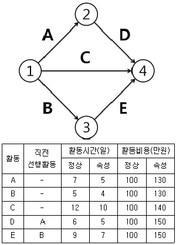
- A
- B
- C
- D
- E
(정답률: 57%)
55. 경력개발에 관한 설명으로 옳은 것은?
- 경력 정체기에 접어들은 종업원들이 보여주는 반응유형은 방어형, 절망형, 성과미달형, 이상형으로 구분된다.
- 샤인(E. Schein)은 개인의 경력욕구 유형을 관리지향, 기술-기능지향, 안전지향 등 세 가지로 구분하였다.
- 홀(D. Hall)의 경력단계 모델에서 중년의 위기가 나타나는 단계는 확립단계이다.
- 이중 경력경로(dual-career path)는 개인이 조직에서 경험하는 직무들이 수평적뿐만 아니라 수직적으로 배열되어 있는 경우이다.
- 경력욕구는 조직이 개인에게 기대하는 행동인 경력역할과 개인 자신이 추구하려고 하는 경력방향에 의해 결정된다.
(정답률: 56%)
56. 경영참가제도에 관한 설명으로 옳지 않은 것은?
- 경영참가제도는 단체교섭과 더불어 노사관계의 양대 축을 형성하고 있다.
- 독일은 노사공동결정제를 실시하고 있다.
- 스캔론플랜(Scanlon plan)은 경영참가제도 중 자본참가의 한 유형이다.
- 종업원지주제(ESOP)는 원래 안정주주의 확보라는 기업방어적인 측면에서 시작되었다.
- 정치적인 측면에서 볼 때 경영참가제도의 목적은 산업민주주의를 실현하는데 있다.
(정답률: 55%)
57. 동기부여이론에 관한 설명으로 옳지 않은 것은?
- 동기부여이론을 내용이론과 과정이론으로 구분할 때 알더퍼(C. Alderfer)의 ERG이론은 내용이론이다.
- 맥클랜드(D. McClelland)의 성취동기이론에서 성취욕구를 측정하기에 가장 적합한 것은 TAT(주제통각검사)이다.
- 허츠버그(F. Herzberg)의 이요인이론에 따르면, 동기유발이 되기 위해서는 동기요인은 충족시키고, 위생요인은 제거해 주어야 한다.
- 브룸(V. Vroom)의 기대이론은 기대감, 수단성, 유의성에 의해 노력의 강도가 결정되는데 이들 중 하나라도 0이면 동기부여가 안된다고 한다.
- 아담스(J. Adams)는 페스팅거(L. Festinger)의 인지부조화 이론을 동기유발과 연관시켜서 공정성이론을 체계화하였다.
(정답률: 59%)
58. 수요예측을 위한 시계열분석에 관한 설명으로 옳지 않은 것은?
- 시계열분석은 장래의 수요를 예측하는 방법으로, 종속변수인 수요의 과거 패턴이 미래에도 그대로 지속된다는 가정에 근거를 두고 있다.
- 전기수요법은 가장 최근의 수요로 다음 기간의 수요를 예측하는 기법으로, 수요가 안정적일 경우 효율적으로 사용할 수 있다.
- 이동평균법은 우연변동만이 크게 작용하는 경우 유용한 기법으로, 가장 최근 n기간 데이터를 산술평균하거나 가중평균하여 다음 기간의 수요를 예측할 수 있다.
- 추세분석법은 과거 자료에 뚜렷한 증가 또는 감소의 추세가 있는 경우, 과거 수요와 추세선상 예측치 간 오차의 합을 최소화하는 직선 추세선을 구하여 미래의 수요를 예측할 수 있다.
- 지수평활법은 추세나 계절변동을 모두 포함하여 분석할 수 있으나, 평활상수를 작게 하여도 최근 수요 데이터의 가중치를 과거 수요 데이터의 가중치보다 작게 부과할 수 없다.
(정답률: 25%)
59. 하우 리(H. Lee)가 제안한 공급사슬 전략 중, 수요의 불확실성이 낮고 공급의 불확실성이 높은 경우 필요한 전략은?
- 효율적 공급사슬
- 반응적 공급사슬
- 민첩한 공급사슬
- 위험회피 공급사슬
- 지속가능 공급사슬
(정답률: 32%)
60. 심리평가에서 신뢰도와 타당도에 관한 설명으로 옳은 것은?
- 내적일치 신뢰도(internal consistency reliability)를 알아보기 위해서는 동일한 속성을 측정하기 위한 검사를 두 가지 다른 형태로 만들어 사람들에게 두 가지형 모두를 실시한다.
- 다양한 신뢰도 측정방법들은 모두 유사한 의미를 지니고 있기 때문에 서로 바꾸어서 사용해도 된다.
- 검사-재검사 신뢰도(test-retest reliability)는 두 번의 검사 시간간격이 길수록 높아진다.
- 준거관련 타당도 중 동시 타당도(concurrent validity)와 예측 타당도(predictive validity) 간의 중요한 차이는 예측변인과 준거자료를 수집하는 시점 간 시간간격이다.
- 검사가 학문적으로 받아들여지기 위해 바람직한 신뢰도 계수와 타당도 계수는 .70~.80의 범위에 존재한다.
(정답률: 65%)
61. 개인의 수행을 판단하기 위해 사용되는 준거의 특성 중 실제준거가 개념준거 전체를 나타내지 못하는 정도를 의미하는 것은?
- 준거 결핍(criterion deficiency)
- 준거 오염(criterion contamination)
- 준거 불일치(criterion discordance)
- 준거 적절성(criterion relevance)
- 준거 복잡성(criterion composite)
(정답률: 66%)
62. 직업 스트레스 모델 중 다양한 직무요구에 대해 종업원들의 외적요인(조직의 지원, 의사결정과정에 대한 참여)과 내적요인(자신의 업무요구에 대한 종업원의 정신적 접근방법)이 개인적으로 직면하는 스트레스 요인에 완충 역할을 한다는 것은?
- 자원보존(Conservation of Resources, COR) 이론
- 요구-통제 모델(Demands-Control Model)
- 요구-자원 모델(Demands-Resources Model)
- 사람-환경 적합 모델(Person-Environment Fit Model)
- 노력-보상 불균형 모델(Effort-Reward Imbalance Model)
(정답률: 50%)
63. 작업동기이론에 관한 설명으로 옳지 않은 것은?
- 기대이론(expectancy theory)은 다른 사람들 간의 동기의 정도를 예측하는 것보다는 한 사람이 서로 다양한 과업에 기울이는 노력의 수준을 예측하는데 유용하다.
- 형평이론(equity theory)에 따르면 개인마다 형평에 대한 선호도에 차이가 있으며, 이러한 형평 민감성은 사람들이 불형평에 직면하였을 때 어떤 행동을 취할지를 예측한다.
- 목표설정이론(goal-setting theory)에 따르면 목표가 어려울수록 수행은 더욱 좋아질 가능성이 크지만, 직무가 복잡하고 목표의 수가 다수인 경우에는 수행이 낮아진다.
- 자기조절이론(self-regulation theory)에서는 개인이 행위의 주체로서 목표를 달성하기 위하여 주도적인 역할을 한다고 주장한다.
- 자기결정이론(self-determination theory)은 자기효능감이 긍정적인 결과를 초래할지 아니면 부정적인 결과를 초래할지에 대한 문제를 이해하는데 도움을 주는 이론이다.
(정답률: 10%)
64. 조직 내 팀에 관한 설명으로 옳지 않은 것을 모두 고른 것은?
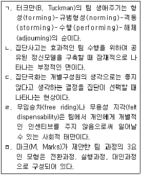
- ㄱ, ㄴ
- ㄱ, ㄷ
- ㄱ, ㄷ, ㅁ
- ㄷ, ㄹ, ㅁ
- ㄱ, ㄴ, ㄷ, ㄹ
(정답률: 12%)
65. 반생산적 업무행동(CWB)에 관한 설명으로 옳지 않은 것은?
- 반생산적 업무행동의 사람기반 원인에는 성실성(conscientiousness), 특성분노(trait anger), 자기통제력(self control), 자기애적 성향(narcissism) 등이 있다.
- 반생산적 업무행동의 주된 상황기반 원인에는 규범, 스트레스에 대한 정서적 반응, 외적 통제소재, 불공정성 등이 있다.
- 조직의 재산이나 조직 성원의 일을 의도적으로 파괴하거나 손상을 입히는 반생산적 업무행동은 심각성, 반복가능성, 가시성에 따라 구분되어 진다.
- 사회적 폄하(social undermining)는 버릇없거나 의욕을 떨어뜨리는 행동으로 직장에서 용수철 효과(spiraling effect)처럼 작용하는 반생산적 업무행동이다.
- 직장폭력과 공격을 유발하는 중요한 예측치는 조직에서 일어난 일이 얼마나 중요하게 인식되는가를 의미하는 유발성 지각(perceived provocation)이다.
(정답률: 55%)
66. 인간지각 특성에 관한 설명으로 옳지 않은 것은?
- 평행한 직선들이 평행하게 보이지 않는 방향착시는 가현운동에 의한 착시의 일종이다.
- 선택, 조직, 해석의 세 가지 지각과정 중 게슈탈트 지각 원리들이 나타나는 것은 조직 과정이다.
- 전체적인 맥락에서 문자나 그림 등의 빠진 부분을 채워서 보는 지각 원리는 폐쇄성(closure)이다.
- 일반적으로 감시하는 대상이 많아지면 주의의 폭은 넓어지고 깊이는 얕아진다.
- 주의력의 특성으로는 선택성, 방향성, 변동성이 있다.
(정답률: 40%)
67. 휴먼에러(human error)에 관한 설명으로 옳은 것은?
- 리전(J. Reason)의 휴먼에러 분류는 행위의 결과만을 보고 분류하므로 에러 분류가 비교적 쉽고 빠른 장점이 있다.
- 지식기반 착오(knowledge based mistake)는 무의식적 행동 관례 및 저장된 행동 양상에 의해 제어되는 것이다.
- 라스무센(J. Rasmussen)은 인간의 불완전한 행동을 의도적인 경우와 비의도적인 경우로 구분하여 에러 유형을 분류하였다.
- 누락오류, 작위오류, 시간오류, 순서오류는 원인적 분류에 해당하는 휴먼에러이다.
- 스웨인(A. Swain)은 휴먼에러를 작업 완수에 필요한 행동과 불필요한 행동을 하는 과정에서 나타나는 에러로 나누었다.
(정답률: 43%)
68. 작업 환경과 건강에 관한 설명으로 옳은 것을 모두 고른 것은? (문제 오류로 가답안 발표시 1번으로 발표되었지만 확정 답안 발표시 모두 정답처리 되었습니다. 여기서는 가답안인 1번을 누르면 정답 처리 됩니다.)
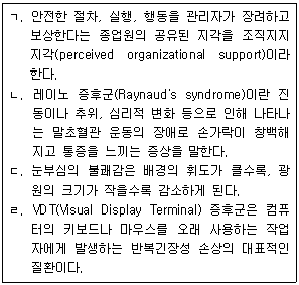
- ㄱ, ㄴ
- ㄴ, ㄷ
- ㄱ, ㄷ, ㄹ
- ㄴ, ㄷ, ㄹ
- ㄱ, ㄴ, ㄷ, ㄹ
(정답률: 58%)
69. 화학물질 및 물리적 인자의 노출기준에서 공기 중 석면 농도의 표시 단위는?
- ppm
- mg/m3
- mppcf
- CFU/m3
- 개/cm3
(정답률: 53%)
70. 1900년 이전에 일어난 산업보건 역사에 해당하지 않는 것은?
- 영국에서 음낭암 발견
- 독일 뮌헨대학에서 위생학 개설
- 영국에서 공장법 제정
- 영국에서 황린 사용금지
- 독일에서 노동자질병보호법 제정
(정답률: 44%)
71. 산업위생전문가의 윤리강령 중 사업주에 대한 책임에 해당하지 않는 것은?
- 쾌적한 작업환경을 만들기 위하여 산업위생의 이론을 적용하고 책임있게 행동한다.
- 신뢰를 바탕으로 정직하게 권고하고 결과와 개선점은 정확히 보고한다.
- 결과와 결론을 위해 사용된 모든 자료들을 정확히 기록ㆍ보관한다.
- 업무 중 취득한 기밀에 대해 비밀을 보장한다.
- 근로자의 건강에 대한 궁극적인 책임은 사업주에게 있음을 인식시킨다.
(정답률: 50%)
72. 납 중독시 나타나는 heme 합성 장해에 관한 설명으로 옳지 않은 것은?
- 혈중 유리철분 감소
- 혈청 중 δ-ALA 증가
- δ-ALAD 작용 억제
- 적혈구내 프로토폴피린 증가
- heme 합성효소 작용 억제
(정답률: 48%)
73. 근로자 건강진단 실시기준에 따른 건강관리구분 CN의 내용은?
- 직업성 질병으로 진전될 우려가 있어 추적검사 등 관찰이 필요한 근로자
- 일반질병으로 진전될 우려가 있어 추적관찰이 필요한 근로자
- 질병으로 진전될 우려가 있어 야간작업시 추적관찰이 필요한 근로자
- 질병의 소견을 보여 야간작업시 사후관리가 필요한 근로자
- 건강진단 1차 검사결과 건강수준의 평가가 곤란하거나 질병이 의심되는 근로자
(정답률: 48%)
74. 비누거품미터의 뷰렛 용량은 500 ml이고, 거품이 지나가는데 10초가 소요되었다면 공기시료채취기의 유량(L/min)은?
- 2.0
- 3.0
- 4.0
- 5.0
- 6.0
(정답률: 42%)
75. 덕트 내 공기에 의한 마찰손실을 표시하는 레이놀드 수(Reynolds No.)에 포함되지 않는 요소는?
- 공기 속도(velocity)
- 덕트 직경(diameter)
- 덕트면 조도(roughness)
- 공기 밀도(density)
- 공기 점도(viscosity)
(정답률: 75%)